Source & review coverageمنبع و پوشش مرور
Source text, original figure/table pages and bibliography inspected. Original source-page views preserve the complete graphics when individual crops are uncertain. Printed values only; no curve digitization. Project relevance and baseline recommendations are explicitly reviewer assessments. Supplementary material not supplied with the local PDF is not claimed reviewed.متن،صفحات شکل/جدول وکتابنامه بررسی شدهاند.نمای صفحه اصلی تصویر کامل را درمرزبرش نامطمئن حفظ میکند.فقط عدد چاپشده ثبت و منحنی تخمین زده نشده است.نقش پروژه وخطمبنا ارزیابی مستقل مرورگر است.پیوست بیرونی موجودنبوده،مطالعهشده ادعا نمیشود.
Research problem and scopeهدف وشکافادعاشده
Lu et al., iScience 28 (2025), article 113867. Data2BEM automates building energy modeling from heterogeneous documents, sensor data and user instructions through calibration and retrofit assessment. The stated gap is fragmented geometry, parameterization, calibration and assessment tools. No numbered hypothesis list is presented.Luوهمکاران،۲۰۲۵.Data2BEMمدلسازیانرژیرامستندات/حسگرو دستورکاربرتاارزیابیبازسازی خودکارمیکند.شکافگسستابزارهندسه،پارامتر،کالیبراسیونوارزیابیاست.فرضیهرسمیشمارهدارندارد. Source · PDF p. 2Source · PDF p. 3
Methodology and implementationنقشعامل وابزارمهندسی
GPT-4-based Information Retriever, Programmer, Result Analyzer, Interpreter and Reviewer agents exchange structured information and code. CAD/DXF geometry, specifications, schedules and sensor data become JSON, OpenStudio code and an EnergyPlus model. Human review remains part of the workflow.بازیاباطلاعات،برنامهنویس،تحلیلگرنتیجه،مفسر وبازبین مبتنیبرGPT-4پارامترساختاریافته،کدOpenStudio،خروجی وگزارش مبادله میکنند.CAD/DXF،اسنادHVAC،برنامه ومصرفاندازهگیریشدهورودیاند.OpenStudio/EnergyPlusشبیهسازیعددیراانجام میدهندوکاربرحضور دارد. Source · PDF p. 3Source · PDF p. 6Source · PDF p. 20Source · PDF p. 21
Calibration uses 2018 heating measurements and a genetic algorithm with population 100, 20 generations, crossover probability 0.5 and mutation probability 0.2. Parameters and bounds are retrieved or confirmed before model runs. External numerical simulation evaluates candidates; the language model does not replace the building physics solver.کالیبراسیونباانرژیگرمایش۲۰۱۸والگوریتمژنتیکجمعیت۱۰۰،۲۰نسل،تقاطع۰٫۵وجهش۰٫۲است.عاملکرانپارامتررادرJSONواپراتورکدتولیدمیکند.سناریوبویلربهASHPمدل،خروجی وحسابهزینه/کربن راتغییرمیدهد. Source · PDF p. 10Source · PDF p. 11Source · PDF p. 12
Experiments and comparisonsمورد،معیاردستی وآزمونپرامپت
The real-building case evaluates geometry, heating-system modeling, schedules, simulation configuration, calibration and a boiler-to-air-source-heat-pump retrofit. Two modelers with six months and four years of experience require 32 and 8 hours, respectively, versus 48 minutes for Data2BEM. Prompt-style perturbations are tested; detailed supplementary traces are referenced but not included in the local PDF.یکدفترکمبریجهندسه،گرمایش،برنامه،شبیهسازی،کالیبراسیون وبازسازیرا آزموده است.دومدلساز مستقل با۶ماهوبیشاز۴سالتجربه،ورودییکسانوSketchUp/OpenStudioبدونLLMدارند.پرامپت با لحن،غلطاملایی وکلمهاضافی آزموده میشود.دادهS1–S7وشکلپیوستهمهدرPDFموجودنیستند. Source · PDF p. 6Source · PDF p. 8Source · PDF p. 12Source · PDF p. 14Source · PDF p. 17
Reported resultsنتایجکالیبراسیون،زمان وبازسازی
Calibration reports NMBE 2.91%, CV-RMSE 0.139 and R² 0.972. The simulated retrofit reduces energy cost from 16,164.25 to 9,026.32 (44.16%) and carbon tax from 7,813.19 to 1,621.49. These are model-based retrofit estimates, not measured savings after installation.کالیبراسیونNMBE۲٫۹۱٪،CV-RMSE۰٫۱۳۹وR²۰٫۹۷۲؛زمان۴۸دقیقهدرمقابل۸و۳۲ساعتمدلسازاست.هزینهسالانهشبیهسازی۱۶۱۶۴٫۲۵به۹۰۲۶٫۳۲پوند(۴۴٫۱۶٪)ومالیاتکربن۷۸۱۳٫۱۹به۱۶۲۱٫۴۹میرسد.اینمقایسهمدلشده است،نه اندازهگیریپسازنصب. Source · PDF p. 12Source · PDF p. 14
Author-stated limitationsمحدودیت وبازتولیدنویسندگان
Validation concerns one richly documented building. Detailed room control and continuous updates are not tested; calibration is offline, the genetic algorithm is not universally suitable and peak-load discrepancies remain. The paper reports code at Zenodo DOI 10.5281/zenodo.17374005, while operational and design data are private. Real-time Twin adaptation remains future work.اعتبارسنجییکساختمانیوغنایدادهلازماست.کنترلاتاقدقیقوبهروزرسانیپیوسته آزموده نشده.کالیبراسیونآفلاین،GAهمگانی نیست واختلافاوجباقیاست.کدZenodoباDOI10.5281/zenodo.17374005گزارش شدهامادادهخصوصی است؛Twinبلادرنگآینده است. Source · PDF p. 16Source · PDF p. 17
Key reported resultsنتایج کلیدی گزارششده
Calibration NMBE 2.91%, CV-RMSE 0.139, R² 0.972; modeling 48 minutes; simulated ASHP energy cost −44.16%.کالیبراسیون۲٫۹۱٪/۰٫۱۳۹/۰٫۹۷۲؛مدلسازی۴۸دقیقه؛کاهشهزینهشبیهسازی۴۴٫۱۶٪. Source · PDF p. 12Source · PDF p. 14
Figures, captions & extracted evidenceشکلها، عنوانها و شواهد استخراجشده
Figure graphical-abstract
Mechanism & workflowسازوکار و گردش کار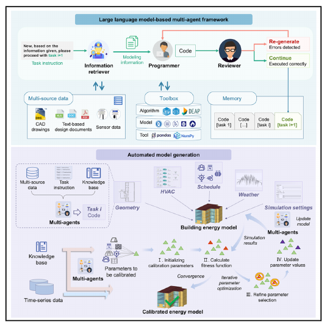
How to read this figureراهنمای خواندن شکل
Trace the inputs, processing stages and outputs, then look for feedback or validation paths. Use the accompanying explanation to distinguish the proposed design from components actually tested in the paper.ورودی، مرحله پردازش و خروجی را دنبال و مسیر بازخورد یا اعتبارسنجی را پیدا کنید. با توضیح همراه، طراحی پیشنهادی را از مؤلفه واقعاً آزمودهشده جدا کنید.
Reader guidance · not an additional author claimراهنمای مطالعه · ادعای اضافی نویسنده نیستWhat this figure showsاین شکل چه نشان میدهد؟
The cover graphic summarizes multi-source retrieval, programming and review, followed by model generation and iterative calibration. It is a summary of the workflow rather than an additional experiment.تصویر،بازیابی چندمنبعی،برنامهنویسی وبازبینی وسپس تولیدمدل و کالیبراسیون تکراری را خلاصه میکند؛ آزمایش اضافی نیست.
Reported values & evidence limitsمقادیر گزارششده و حدود شواهد
Printed highlights report modeling-time reduction >90% (48 minutes versus 8–32 hours), simulated energy cost reduction about 44% and carbon tax roughly fivefold lower. These summarize the main case and are not independent replications.نکته چاپی:کاهش زمان بیشاز۹۰٪(۴۸دقیقه درمقابل۸–۳۲ساعت)،کاهش هزینه شبیهسازی حدود۴۴٪ و مالیات کربن تقریباًپنجبرابرکمتر؛ همان مورد اصلی است،نه تکرار مستقل.
Figure 1
Comparison & resultsمقایسه و نتایج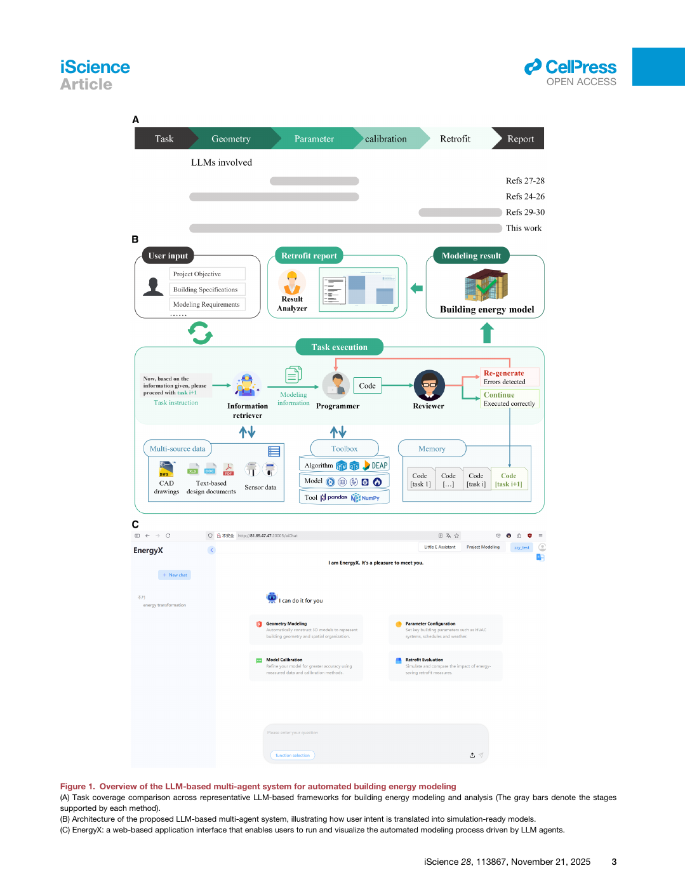
How to read this figureراهنمای خواندن شکل
Check the axes, units, panel labels and the caption’s definition of better performance. Compare methods under the stated conditions; keep uncertainty, tradeoffs and normalization separate from headline gains.محور، واحد، پنل و تعریف عملکرد بهتر در عنوان را بررسی کنید. روشها را در شرایط بیانشده مقایسه و عدمقطعیت، مصالحه و نرمالسازی را از بهبود شاخص اصلی جدا نگه دارید.
Reader guidance · not an additional author claimراهنمای مطالعه · ادعای اضافی نویسنده نیستWhat this figure showsاین شکل چه نشان میدهد؟
Compares task coverage of earlier frameworks and shows Data2BEM spanning model construction, calibration and retrofit assessment. Bars denote supported stages, not accuracy scores.پوشش مراحل مدلسازی تا کالیبراسیون و بازسازی را مقایسه میکند، نه دقت را.
Reported values & evidence limitsمقادیر گزارششده و حدود شواهد
The explanation above summarizes the visual. Inspect the original labels for its full details; no additional values have been inferred.توضیح بالا تصویر را خلاصه میکند. جزئیات کامل در برچسب اصلی است و مقدار اضافی استنباط نشده است.
Figure 2
Mechanism & workflowسازوکار و گردش کار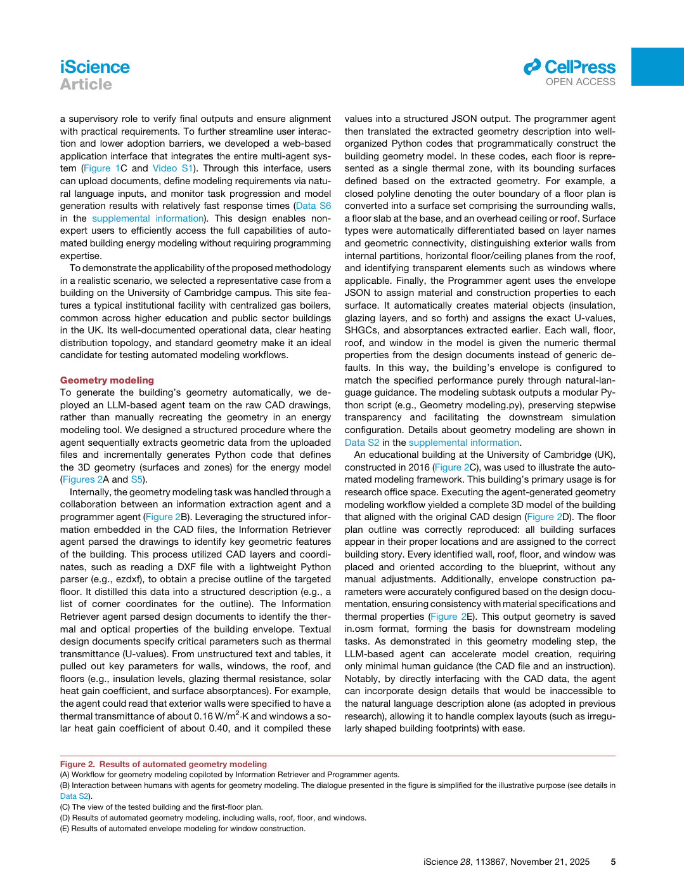
How to read this figureراهنمای خواندن شکل
Trace the inputs, processing stages and outputs, then look for feedback or validation paths. Use the accompanying explanation to distinguish the proposed design from components actually tested in the paper.ورودی، مرحله پردازش و خروجی را دنبال و مسیر بازخورد یا اعتبارسنجی را پیدا کنید. با توضیح همراه، طراحی پیشنهادی را از مؤلفه واقعاً آزمودهشده جدا کنید.
Reader guidance · not an additional author claimراهنمای مطالعه · ادعای اضافی نویسنده نیستWhat this figure showsاین شکل چه نشان میدهد؟
Information Retriever and Programmer collaborate on geometry. Illustrated dialogue is simplified; full interaction traces are in supplementary Data S3, which is not locally supplied.گردش بازیابی و برنامهنویسی هندسه و گفتوگوی سادهشده را نمایش میدهد.
Reported values & evidence limitsمقادیر گزارششده و حدود شواهد
The explanation above summarizes the visual. Inspect the original labels for its full details; no additional values have been inferred.توضیح بالا تصویر را خلاصه میکند. جزئیات کامل در برچسب اصلی است و مقدار اضافی استنباط نشده است.
Figure 3
Mechanism & workflowسازوکار و گردش کار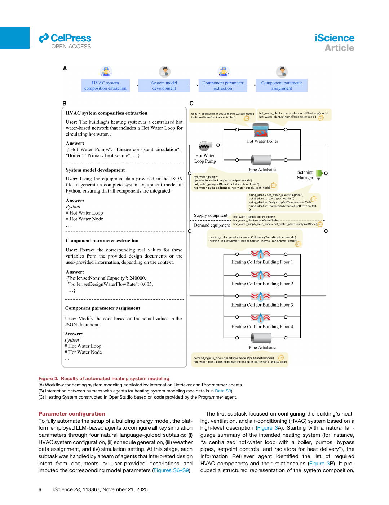
How to read this figureراهنمای خواندن شکل
Trace the inputs, processing stages and outputs, then look for feedback or validation paths. Use the accompanying explanation to distinguish the proposed design from components actually tested in the paper.ورودی، مرحله پردازش و خروجی را دنبال و مسیر بازخورد یا اعتبارسنجی را پیدا کنید. با توضیح همراه، طراحی پیشنهادی را از مؤلفه واقعاً آزمودهشده جدا کنید.
Reader guidance · not an additional author claimراهنمای مطالعه · ادعای اضافی نویسنده نیستWhat this figure showsاین شکل چه نشان میدهد؟
Retrieved heating specifications become model code and a building heating configuration. Preserve the printed system relationships instead of assuming a generic HVAC model.مشخصات گرمایش به کد و پیکربندی مدل ساختمان تبدیل میشوند.
Reported values & evidence limitsمقادیر گزارششده و حدود شواهد
The explanation above summarizes the visual. Inspect the original labels for its full details; no additional values have been inferred.توضیح بالا تصویر را خلاصه میکند. جزئیات کامل در برچسب اصلی است و مقدار اضافی استنباط نشده است.
Figure 4
Mechanism & workflowسازوکار و گردش کار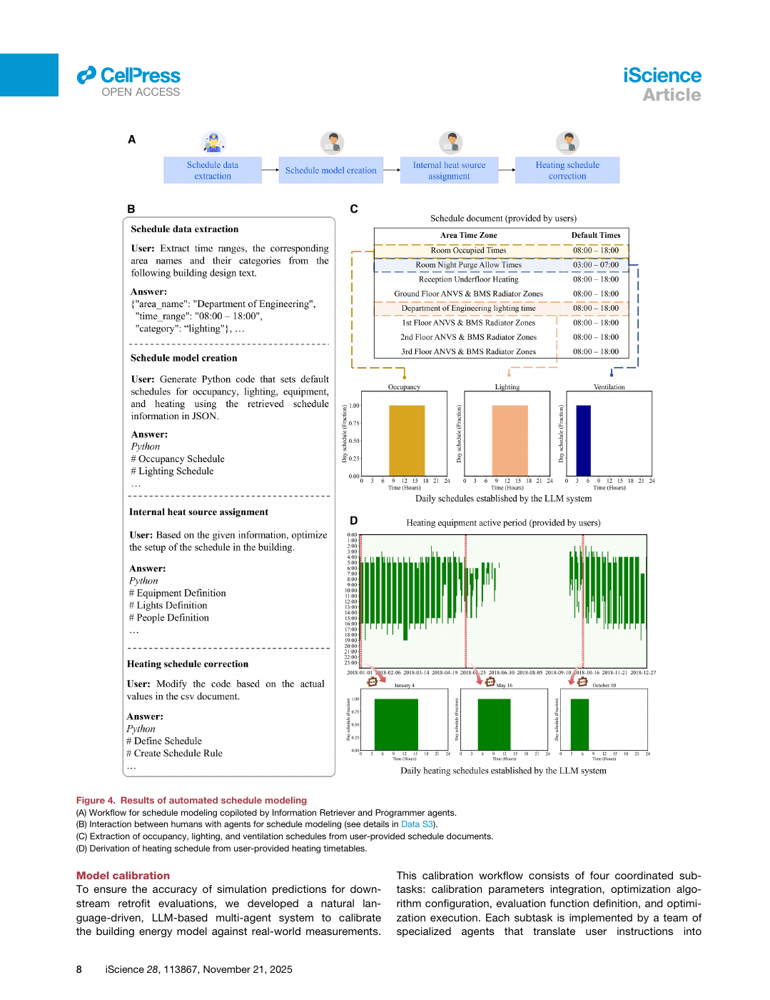
How to read this figureراهنمای خواندن شکل
Trace the inputs, processing stages and outputs, then look for feedback or validation paths. Use the accompanying explanation to distinguish the proposed design from components actually tested in the paper.ورودی، مرحله پردازش و خروجی را دنبال و مسیر بازخورد یا اعتبارسنجی را پیدا کنید. با توضیح همراه، طراحی پیشنهادی را از مؤلفه واقعاً آزمودهشده جدا کنید.
Reader guidance · not an additional author claimراهنمای مطالعه · ادعای اضافی نویسنده نیستWhat this figure showsاین شکل چه نشان میدهد؟
Schedule extraction and code generation connect operational descriptions to model schedules. Dialogue details are deferred by the authors to supplementary Data S3.استخراج برنامه زمانی و تولید کد، شرح بهرهبرداری را وارد مدل میکند.
Reported values & evidence limitsمقادیر گزارششده و حدود شواهد
The explanation above summarizes the visual. Inspect the original labels for its full details; no additional values have been inferred.توضیح بالا تصویر را خلاصه میکند. جزئیات کامل در برچسب اصلی است و مقدار اضافی استنباط نشده است.
Figure 5
Mechanism & workflowسازوکار و گردش کار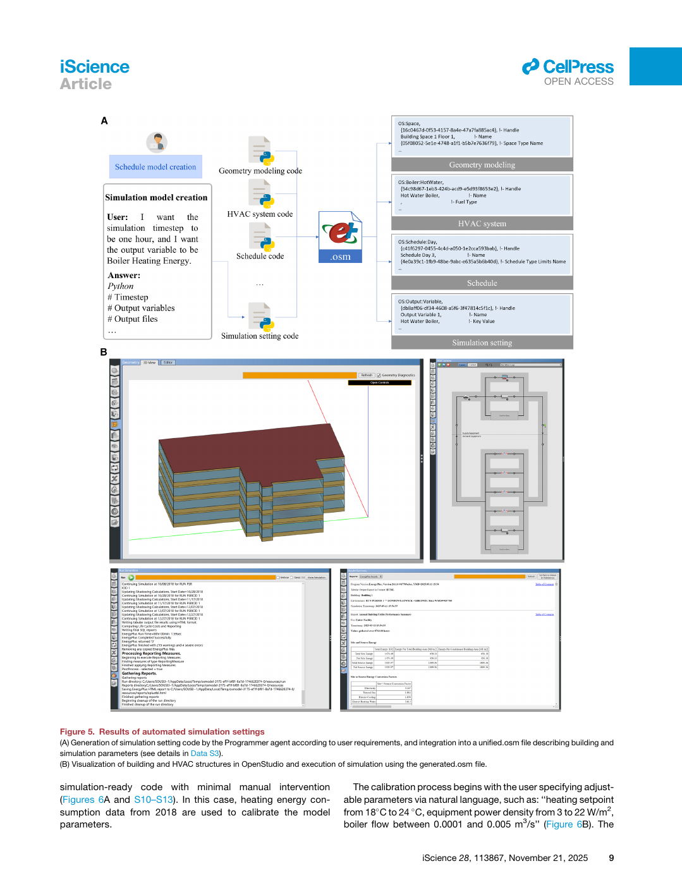
How to read this figureراهنمای خواندن شکل
Trace the inputs, processing stages and outputs, then look for feedback or validation paths. Use the accompanying explanation to distinguish the proposed design from components actually tested in the paper.ورودی، مرحله پردازش و خروجی را دنبال و مسیر بازخورد یا اعتبارسنجی را پیدا کنید. با توضیح همراه، طراحی پیشنهادی را از مؤلفه واقعاً آزمودهشده جدا کنید.
Reader guidance · not an additional author claimراهنمای مطالعه · ادعای اضافی نویسنده نیستWhat this figure showsاین شکل چه نشان میدهد؟
The Programmer integrates model and simulation parameters into a unified .osm file according to the request. This is implementation workflow evidence, not an independent test dataset.پارامتر مدل و شبیهسازی بر پایه درخواست در فایل .osm یکپارچه میشوند.
Reported values & evidence limitsمقادیر گزارششده و حدود شواهد
The explanation above summarizes the visual. Inspect the original labels for its full details; no additional values have been inferred.توضیح بالا تصویر را خلاصه میکند. جزئیات کامل در برچسب اصلی است و مقدار اضافی استنباط نشده است.
Figure 6
Mechanism & workflowسازوکار و گردش کار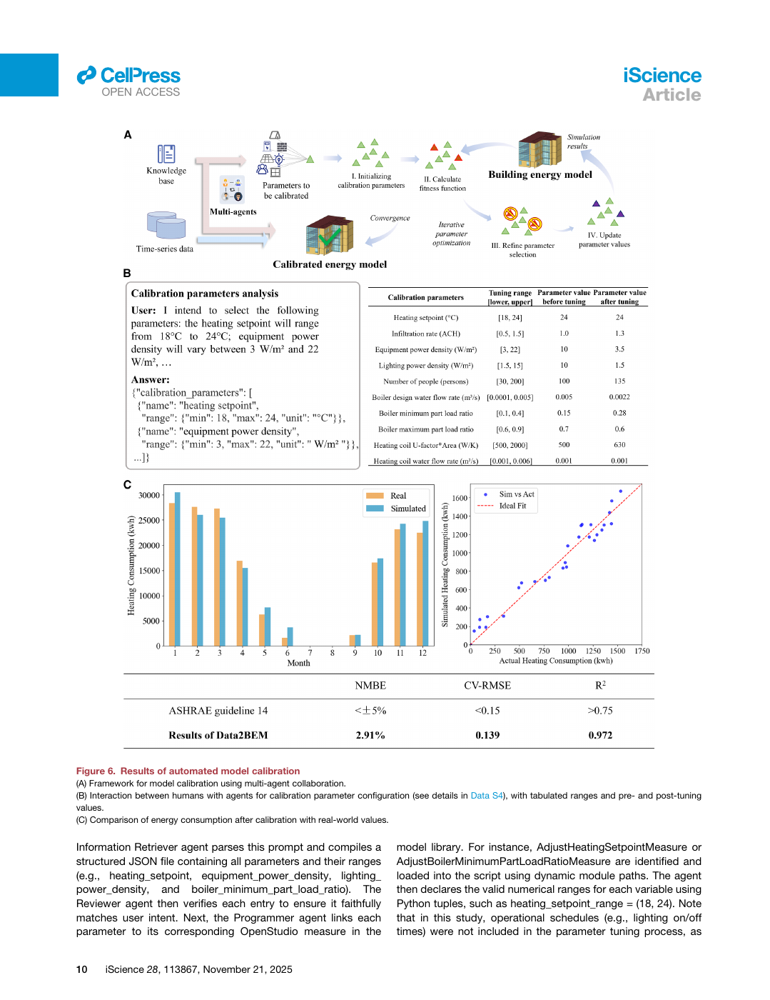
How to read this figureراهنمای خواندن شکل
Trace the inputs, processing stages and outputs, then look for feedback or validation paths. Use the accompanying explanation to distinguish the proposed design from components actually tested in the paper.ورودی، مرحله پردازش و خروجی را دنبال و مسیر بازخورد یا اعتبارسنجی را پیدا کنید. با توضیح همراه، طراحی پیشنهادی را از مؤلفه واقعاً آزمودهشده جدا کنید.
Reader guidance · not an additional author claimراهنمای مطالعه · ادعای اضافی نویسنده نیستWhat this figure showsاین شکل چه نشان میدهد؟
The panels show agent collaboration, parameter bounds and fitted energy behavior. Reported fit is NMBE 2.91%, CV-RMSE 0.139 and R² 0.972; no curve values are estimated.گردش کالیبراسیون، حدود پارامتر و برازش را دارد:۲٫۹۱٪،۰٫۱۳۹ و۰٫۹۷۲.
Reported values & evidence limitsمقادیر گزارششده و حدود شواهد
Printed calibration (range; before→after): heating setpoint 18–24°C, 24→24; infiltration 0.5–1.5 ACH, 1.0→1.3; equipment 3–22 W/m², 10→3.5; lighting 1.5–15 W/m², 15→1.5; people 30–200, 100→135; boiler water flow 0.0001–0.005 m³/s, 0.005→0.0022; boiler minimum part load 0.1–0.4, 0.15→0.28; maximum part load 0.6–0.9, 0.7→0.6; heating-coil UA 500–2000 W/K, 500→630; coil flow 0.001–0.006 m³/s, 0.001→0.001. Fit: NMBE 2.91%, CV-RMSE 0.139, R² 0.972. The figure prints guideline targets ±5%, <0.15 and >0.75.پارامتر چاپی پیش/پس:ستپوینت۲۴/۲۴،نفوذ۱/۱٫۳ACH،تجهیز۱۰/۳٫۵،روشنایی۱۵/۱٫۵واتبرمترمربع،افراد۱۰۰/۱۳۵،دبی بویلر۰٫۰۰۵/۰٫۰۰۲۲،بارجزئی کم۰٫۱۵/۰٫۲۸وزیاد۰٫۷/۰٫۶،UAکویل۵۰۰/۶۳۰،دبی کویل۰٫۰۰۱/۰٫۰۰۱.برازش۲٫۹۱٪،۰٫۱۳۹،۰٫۹۷۲و هدف راهنما±۵٪،کمتر۰٫۱۵وبیشتر۰٫۷۵است.
Figure 7
Comparison & resultsمقایسه و نتایج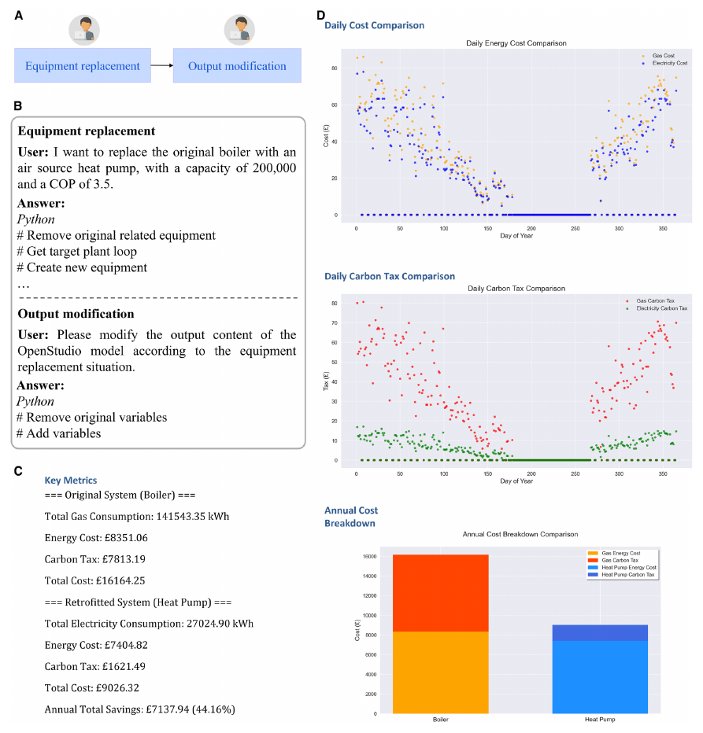
How to read this figureراهنمای خواندن شکل
Check the axes, units, panel labels and the caption’s definition of better performance. Compare methods under the stated conditions; keep uncertainty, tradeoffs and normalization separate from headline gains.محور، واحد، پنل و تعریف عملکرد بهتر در عنوان را بررسی کنید. روشها را در شرایط بیانشده مقایسه و عدمقطعیت، مصالحه و نرمالسازی را از بهبود شاخص اصلی جدا نگه دارید.
Reader guidance · not an additional author claimراهنمای مطالعه · ادعای اضافی نویسنده نیستWhat this figure showsاین شکل چه نشان میدهد؟
The boiler-to-ASHP comparison is simulation based. Reported cost changes from 16,164.25 to 9,026.32, a 44.16% reduction; this is not measured post-installation saving.بازسازی بویلر به پمپ حرارتی شبیهسازی است؛ هزینه از۱۶۱۶۴٫۲۵ به۹۰۲۶٫۳۲ میرسد.
Reported values & evidence limitsمقادیر گزارششده و حدود شواهد
The explanation above summarizes the visual. Inspect the original labels for its full details; no additional values have been inferred.توضیح بالا تصویر را خلاصه میکند. جزئیات کامل در برچسب اصلی است و مقدار اضافی استنباط نشده است.
Figure 8
Comparison & resultsمقایسه و نتایج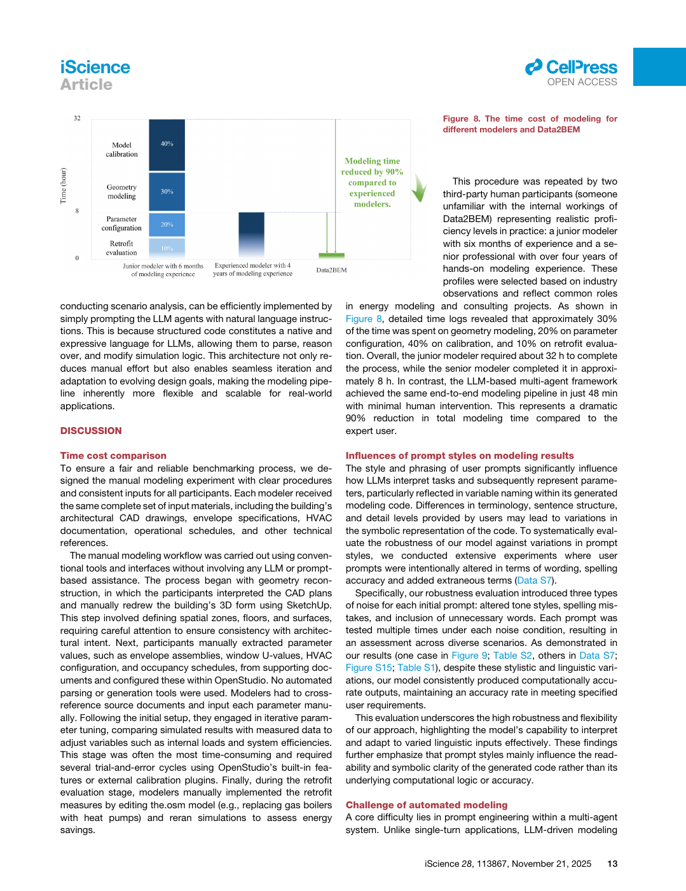
How to read this figureراهنمای خواندن شکل
Check the axes, units, panel labels and the caption’s definition of better performance. Compare methods under the stated conditions; keep uncertainty, tradeoffs and normalization separate from headline gains.محور، واحد، پنل و تعریف عملکرد بهتر در عنوان را بررسی کنید. روشها را در شرایط بیانشده مقایسه و عدمقطعیت، مصالحه و نرمالسازی را از بهبود شاخص اصلی جدا نگه دارید.
Reader guidance · not an additional author claimراهنمای مطالعه · ادعای اضافی نویسنده نیستWhat this figure showsاین شکل چه نشان میدهد؟
Two modelers require 32 and 8 hours, compared with 48 minutes for Data2BEM. This is a case-specific comparison with two people, not population-level productivity evidence.دو مدلساز۳۲ و۸ساعت و سامانه۴۸دقیقه زمان بردهاند؛ مقایسه موردی است.
Reported values & evidence limitsمقادیر گزارششده و حدود شواهد
The explanation above summarizes the visual. Inspect the original labels for its full details; no additional values have been inferred.توضیح بالا تصویر را خلاصه میکند. جزئیات کامل در برچسب اصلی است و مقدار اضافی استنباط نشده است.
Figure 9
Source visualتصویر منبع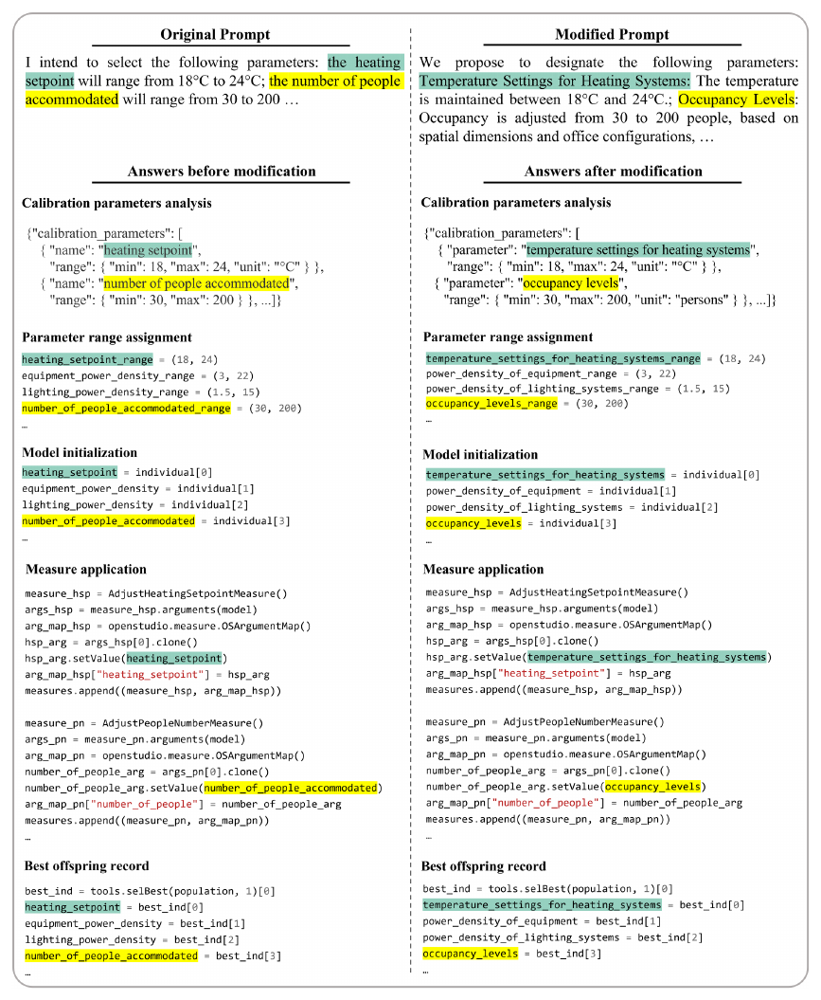
How to read this figureراهنمای خواندن شکل
Read the original labels and caption first, then use the explanation and evidence note below. Printed quantities are preserved separately from reviewer interpretation.ابتدا برچسبها و عنوان اصلی را بخوانید و سپس توضیح و یادداشت شاهد را بررسی کنید. مقدار چاپشده از تفسیر مرورگر جدا نگه داشته شده است.
Reader guidance · not an additional author claimراهنمای مطالعه · ادعای اضافی نویسنده نیستWhat this figure showsاین شکل چه نشان میدهد؟
Perturbed prompt styles test calibration parameter extraction and generated variable names. The supplied main figure is retained; unavailable supplemental trials are not claimed reviewed.اثر سبک پرامپت بر استخراج پارامتر و نام متغیر آزموده شده است.
Reported values & evidence limitsمقادیر گزارششده و حدود شواهد
The explanation above summarizes the visual. Inspect the original labels for its full details; no additional values have been inferred.توضیح بالا تصویر را خلاصه میکند. جزئیات کامل در برچسب اصلی است و مقدار اضافی استنباط نشده است.
Figure 10
Mechanism & workflowسازوکار و گردش کار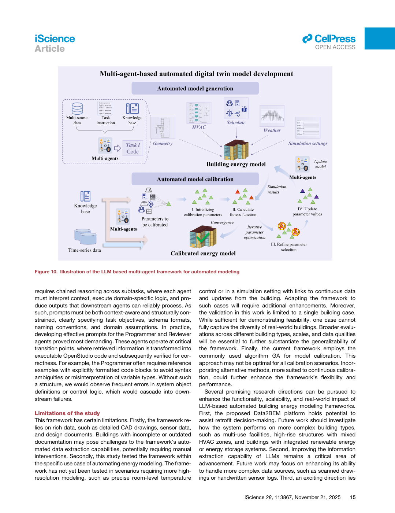
How to read this figureراهنمای خواندن شکل
Trace the inputs, processing stages and outputs, then look for feedback or validation paths. Use the accompanying explanation to distinguish the proposed design from components actually tested in the paper.ورودی، مرحله پردازش و خروجی را دنبال و مسیر بازخورد یا اعتبارسنجی را پیدا کنید. با توضیح همراه، طراحی پیشنهادی را از مؤلفه واقعاً آزمودهشده جدا کنید.
Reader guidance · not an additional author claimراهنمای مطالعه · ادعای اضافی نویسنده نیستWhat this figure showsاین شکل چه نشان میدهد؟
Information retrieval, programming, result analysis, interpretation and review divide the end-to-end modeling task. This distinguishes orchestration roles from the numerical simulator.نقش بازیابی، برنامهنویسی، تحلیل، تفسیر و بازبینی تقسیم شدهاند.
Reported values & evidence limitsمقادیر گزارششده و حدود شواهد
The explanation above summarizes the visual. Inspect the original labels for its full details; no additional values have been inferred.توضیح بالا تصویر را خلاصه میکند. جزئیات کامل در برچسب اصلی است و مقدار اضافی استنباط نشده است.
Figure 11
Mechanism & workflowسازوکار و گردش کار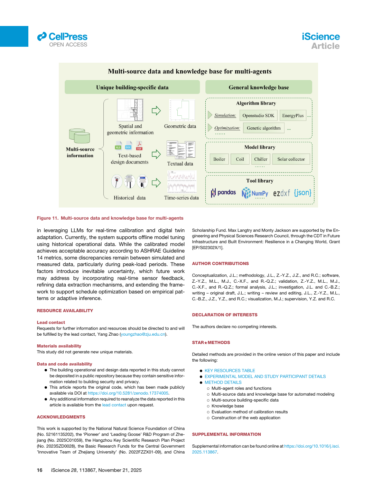
How to read this figureراهنمای خواندن شکل
Trace the inputs, processing stages and outputs, then look for feedback or validation paths. Use the accompanying explanation to distinguish the proposed design from components actually tested in the paper.ورودی، مرحله پردازش و خروجی را دنبال و مسیر بازخورد یا اعتبارسنجی را پیدا کنید. با توضیح همراه، طراحی پیشنهادی را از مؤلفه واقعاً آزمودهشده جدا کنید.
Reader guidance · not an additional author claimراهنمای مطالعه · ادعای اضافی نویسنده نیستWhat this figure showsاین شکل چه نشان میدهد؟
Documents, geometry and operational data supply the shared modeling context. This also explains the dependence on rich building documentation and private source data.داده هندسه، اسناد و بهرهبرداری زمینه مشترک عاملها را میسازند.
Reported values & evidence limitsمقادیر گزارششده و حدود شواهد
The explanation above summarizes the visual. Inspect the original labels for its full details; no additional values have been inferred.توضیح بالا تصویر را خلاصه میکند. جزئیات کامل در برچسب اصلی است و مقدار اضافی استنباط نشده است.
Tables & numerical evidenceجدولها و شواهد عددی
Table resources · Key resourcesمنابع نرمافزار و شناسه بازتولید را دارد؛ کدZenodo عمومی ولی داده ساختمان خصوصی است.
Lists software and resource identifiers supporting reproducibility; code is reported at Zenodo 10.5281/zenodo.17374005 while source building data remain private.منابع نرمافزار و شناسه بازتولید را دارد؛ کدZenodo عمومی ولی داده ساختمان خصوصی است.
Table resources · PDF p. 20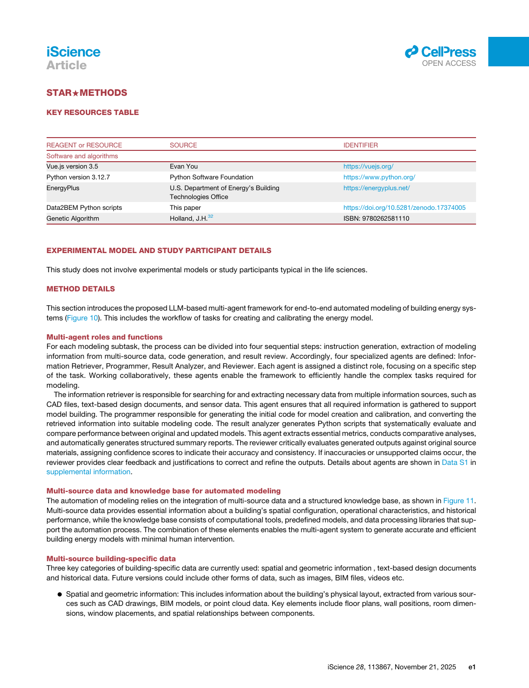
Critical analysis — reviewer assessmentتحلیل انتقادی — ارزیابی مرورگر
The 48-minute comparison with two modelers is case-specific. Calibration fit does not identify equipment fault causes or prove measured post-retrofit recovery.۴۸دقیقهدرمقابلدومدلسازمقایسهموردیاست،نه بهرهوریجمعیتی.برازشکالیبراسیونعلتخطایاتعقیببازیابیواقعیرااثباتنمیکند. Source · PDF p. 12Source · PDF p. 14
Role in our researchنقش مقاله در پژوهش ما
Why is it important to our research?چرا برای پژوهش ما مهم است؟
Agentic generation and calibration of building models already exist. This is relevant to Twin-update engineering and to defining what our causal intervention contribution adds.وجودمدلسازی/کالیبراسیونعاملمحوررااثباتپیشینه میکند؛برایمهندسیبهروزرسانیTwinونوآوریمرتبطاست. Source · PDF p. 3Source · PDF p. 17
What does it contribute to our research?چه سهمی در پژوهش ما دارد؟
It contributes structured retrieval, coding and review interfaces plus an external simulation and calibration workflow.قراردادبازیابی–کد–بازبینی وگردشکارشبیهسازی/کالیبراسیونبیرونی میدهد. Source · PDF p. 3Source · PDF p. 20Source · PDF p. 21
How can we employ it?چگونه از آن استفاده کنیم؟
Adapt versioned calibration proposals and a reviewer interface in the isolated Operational Twin sandbox. Keep the Reference Twin frozen and require diagnostic evidence before accepting parameter changes. This is our proposed use, not an evaluated article result.رابطپیشنهادکالیبراسیوننسخهداروبازبین درsandboxTwinعملیاتی اقتباس شود؛Twinمرجع ثابتماندوتغییرپارامترشاهدتشخیصی بخواهد. Source · PDF p. 11Source · PDF p. 16Source · PDF p. 17
Should we implement it as a baseline?آیا باید آن را بهعنوان خطمبنا پیاده کنیم؟
Use as a modeling and calibration helper rather than a mandatory control or diagnosis baseline. A calibration-workflow comparison is optional if input data and task scope can be matched.کمکی است،نه خطمبنایکنترل/تشخیصاجباری.مقایسهکالیبراسیون فقطباورودیهمساناختیاریاست؛تولیدآفلاینData2BEMوظیفهمداخلهعلّیآنلاینمانیست. Source · PDF p. 16Source · PDF p. 17
Original source pagesصفحات اصلی منبع
PDF page 1
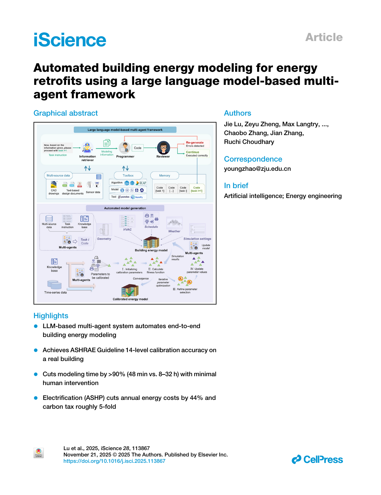
PDF page 2
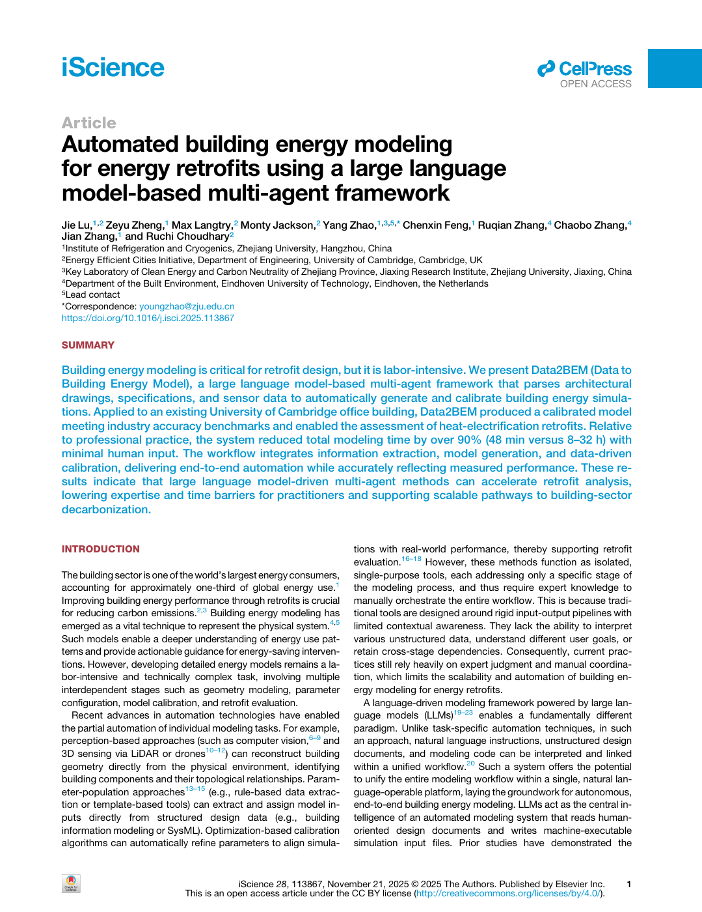
PDF page 3
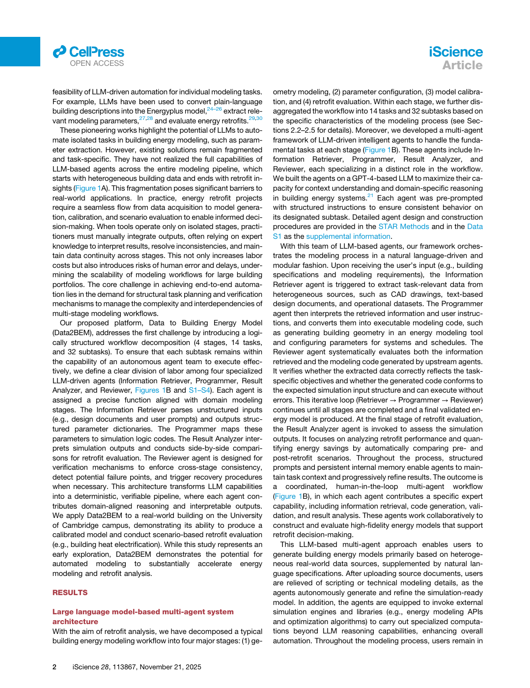
PDF page 5
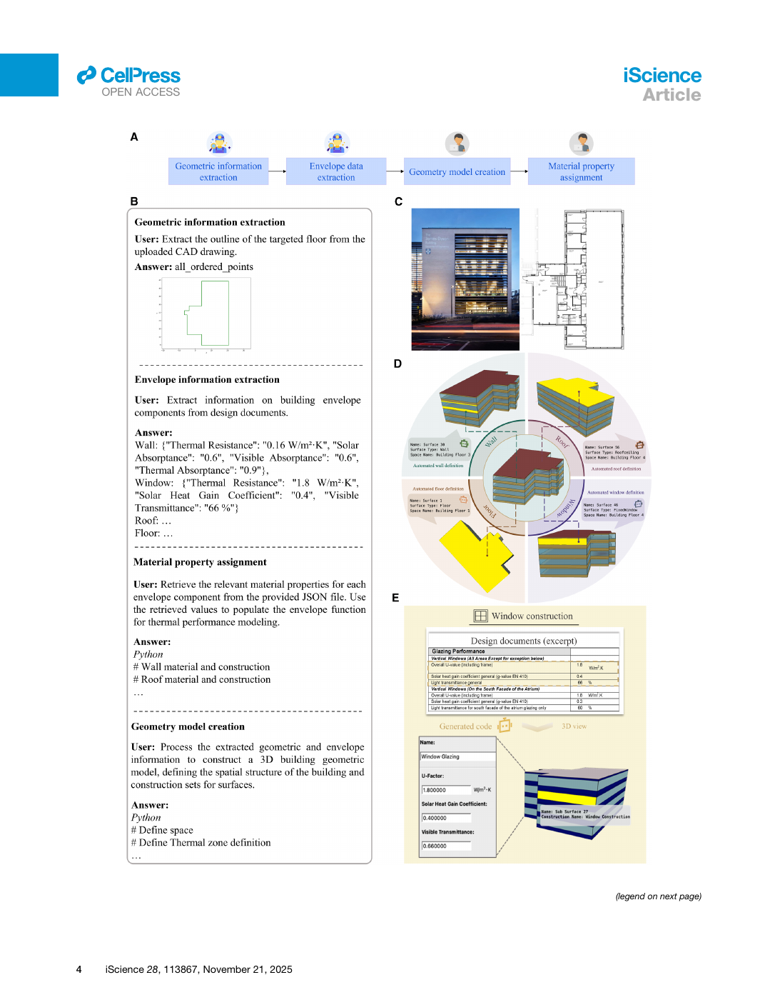
PDF page 8
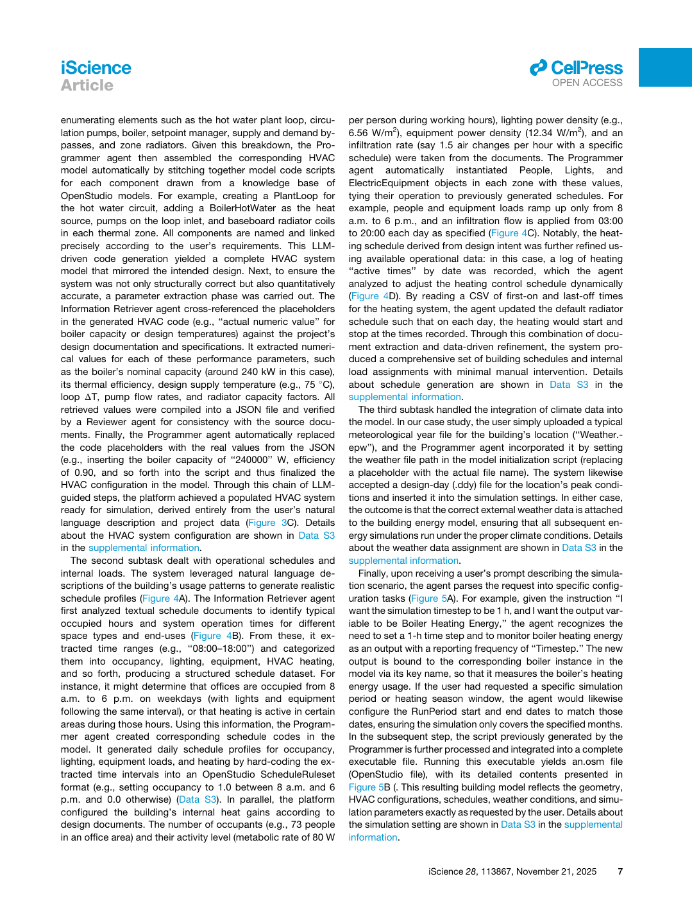
PDF page 12
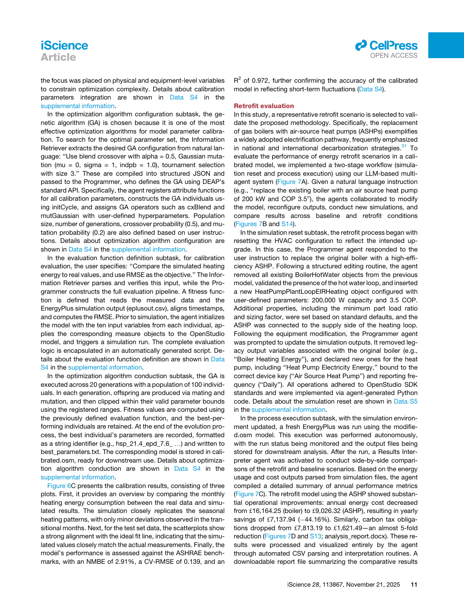
PDF page 13
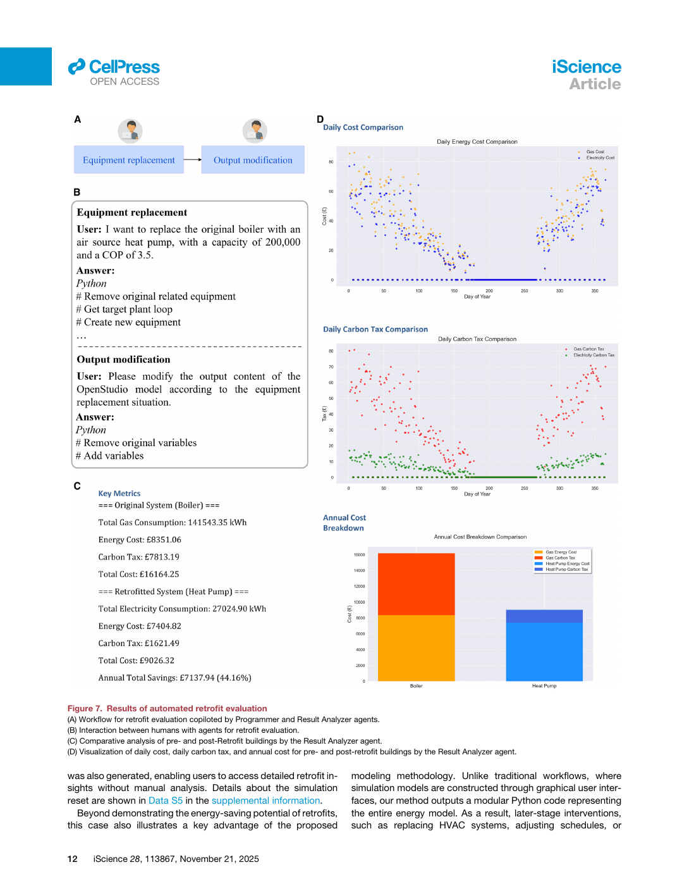
PDF page 15
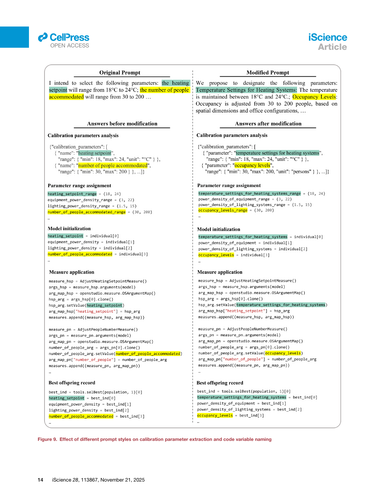
PDF page 18
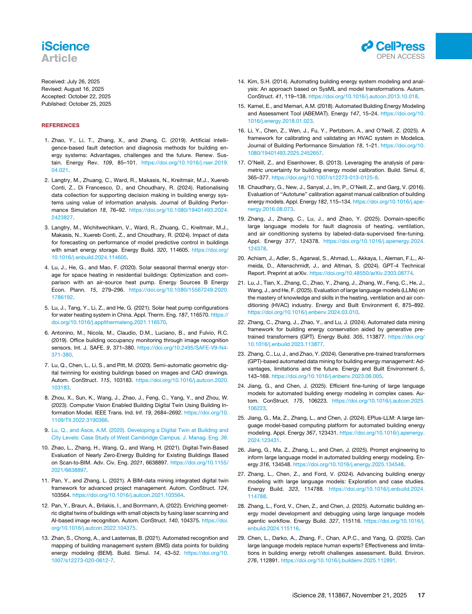
PDF page 19
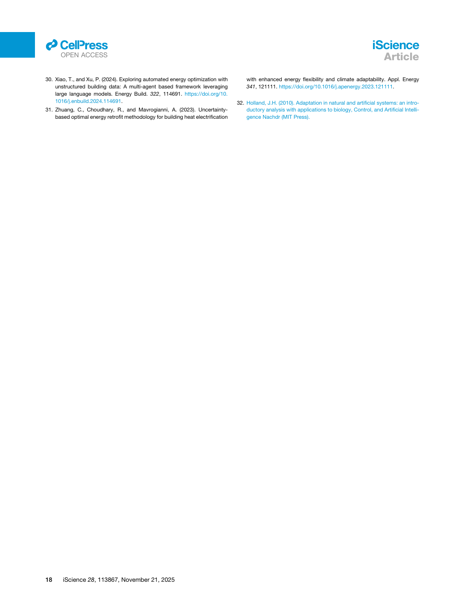
PDF page 21
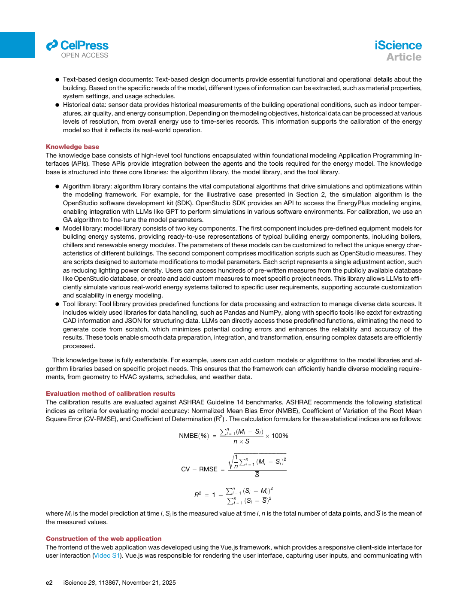
PDF page 22
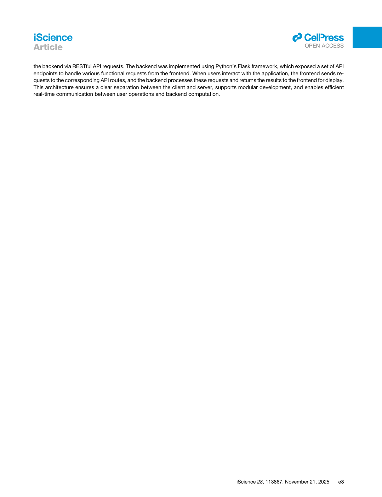
Full bibliographyکتابنامه کامل
Full bibliography transcribed from the source PDF. Original reference pages are the authority for formatting and extraction ambiguities; cited works were not independently analyzed just because they appear here.کتابنامه کامل از PDF منبع استخراج شده است. صفحه اصلی مرجع نگارش و ابهام استخراج است؛ درج منبع به معنی تحلیل مستقل آن اثر نیست.
Bibliography · PDF p. 18Bibliography · PDF p. 19Bibliography · PDF p. 20Bibliography · PDF p. 21Bibliography · PDF p. 22